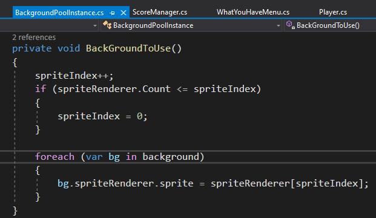
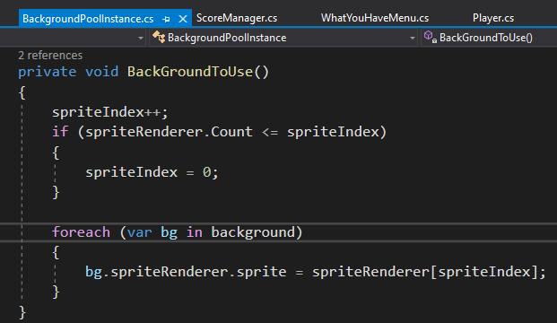
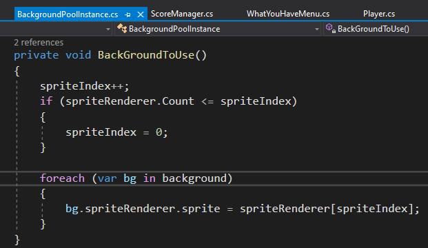

First Android Game - Part 14 - Syncing LevelsAug 10, 2023This is part 14 of making my first Android Game. If you missed part13, you can find it hereI want to have a way to sync the background images and level increase across the network. I only want the master client to send this. In ScoreManager.cs, I added back the AddLevel() functionThe AddLevel() function would call the RPC function called AddLevelRPC that increases the level text and invokes the event LevelIncreaseEvent. This event has the background change subscribed to itTo test if this works, in Update(), when I press "A" I would call the AddLevel() functionSince the photonview is needed and the ScoreManager.cs is attached to the ScoreBoard prefab, the prefab must be put into the resources folderThe scoreboard prefab has PhotonView component attached to itTo change the background, I am looping through an array. To make sure I don't get index out of range, I would do a check to see if spriteIndex has passed the sprite array count

Using the "A" key to test. The background changes, level increases, and it gets synced across the networkRecent blogsSee all blogs
 The AddLevel() function would call the RPC function called AddLevelRPC that increases the level text and invokes the event LevelIncreaseEvent. This event has the background change subscribed to it
To test if this works, in Update(), when I press "A" I would call the AddLevel() function
Since the photonview is needed and the ScoreManager.cs is attached to the ScoreBoard prefab, the prefab must be put into the resources folder
The AddLevel() function would call the RPC function called AddLevelRPC that increases the level text and invokes the event LevelIncreaseEvent. This event has the background change subscribed to it
To test if this works, in Update(), when I press "A" I would call the AddLevel() function
Since the photonview is needed and the ScoreManager.cs is attached to the ScoreBoard prefab, the prefab must be put into the resources folder
 The scoreboard prefab has PhotonView component attached to it
To change the background, I am looping through an array. To make sure I don't get index out of range, I would do a check to see if spriteIndex has passed the sprite array count

Using the "A" key to test. The background changes, level increases, and it gets synced across the network
The scoreboard prefab has PhotonView component attached to it
To change the background, I am looping through an array. To make sure I don't get index out of range, I would do a check to see if spriteIndex has passed the sprite array count

Using the "A" key to test. The background changes, level increases, and it gets synced across the network